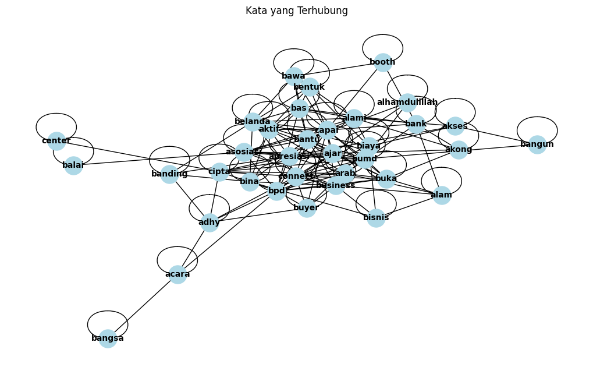

Mencari Kata Penting#
Proses ini menghasilkan kata-kata penting yang mencerminkan inti dari teks yang dianalisis. Kata-kata yang memiliki bobot tinggi dalam kalimat-kalimat yang serupa dianggap sebagai kata kunci atau kata penting
Import Library#
!pip install PySastrawi
Requirement already satisfied: PySastrawi in /usr/local/lib/python3.10/dist-packages (1.2.0)
import pandas as pd
import nltk
nltk.download('punkt')
nltk.download('stopwords')
import re
import networkx as nx
import numpy as np
from sklearn.feature_extraction.text import TfidfVectorizer, CountVectorizer
from sklearn.metrics.pairwise import cosine_similarity
from Sastrawi.Stemmer.StemmerFactory import StemmerFactory
from nltk.corpus import stopwords as nltk_stopwords
from nltk.tokenize import word_tokenize
import matplotlib.pyplot as plt
[nltk_data] Downloading package punkt to /root/nltk_data...
[nltk_data] Package punkt is already up-to-date!
[nltk_data] Downloading package stopwords to /root/nltk_data...
[nltk_data] Package stopwords is already up-to-date!
Fungsi Untuk Proses Membuat Kata Penting#
# Inisialisasi stemmer dan stopwords bahasa Indonesia
factory = StemmerFactory()
stemmer = factory.create_stemmer()
stopwords_list = set(nltk_stopwords.words('indonesian'))
# Fungsi untuk preprocessing
def preprocess_text(text):
text = re.sub(r'http\S+|www\S+|https\S+', '', text, flags=re.MULTILINE) # Menghapus URL
text = re.sub(r'\d+', '', text) # Menghapus angka
text = re.sub(r'[^\w\s]', '', text) # Menghapus tanda baca
text = text.lower() # Mengubah ke huruf kecil
tokens = word_tokenize(text) # Tokenisasi
tokens = [word for word in tokens if word not in stopwords_list] # Menghapus stopwords
tokens = [stemmer.stem(word) for word in tokens] # Stemming
return ' '.join(tokens) # Menggabungkan kembali token menjadi teks
# Fungsi untuk menghitung TF-IDF
def compute_tfidf(kalimat_preprocessed):
vectorizer = TfidfVectorizer()
tfidf_matrix = vectorizer.fit_transform(kalimat_preprocessed).toarray()
tfidf_df = pd.DataFrame(tfidf_matrix, columns=vectorizer.get_feature_names_out())
return tfidf_df, vectorizer
# Fungsi untuk menghitung cosine similarity
def compute_cosine_similarity(tfidf_matrix):
cosine_sim = cosine_similarity(tfidf_matrix)
return cosine_sim
# Fungsi untuk membuat adjacency matrix
def create_adjacency_matrix(cosine_sim):
threshold = 0.1 # ambang batas untuk adjacency matrix
adjacency_matrix = (cosine_sim > threshold).astype(int)
return adjacency_matrix
# Fungsi untuk menggambar graph
def draw_graph(adjacency_matrix, feature_names):
G = nx.from_numpy_array(adjacency_matrix) # Buat graph dari adjacency matrix
labels = {i: feature_names[i] for i in range(len(feature_names)) if i < adjacency_matrix.shape[0]} #ambil features
plt.figure(figsize=(10, 6))
pos = nx.spring_layout(G) # posisi layout untuk graph
nx.draw(G, pos, with_labels=True, labels=labels, node_color='lightblue', node_size=500, font_size=10, font_weight='bold')
plt.title('Kata yang Terhubung')
plt.show()
# Fungsi untuk mendapatkan kata penting
def extract_important_words(tfidf_df):
kata_penting = tfidf_df.max(axis=0) # Mengambil nilai maksimum dari setiap kolom
kata_penting_df = pd.DataFrame(kata_penting, columns=['Nilai TF-IDF']).reset_index()
kata_penting_df.columns = ['Kata', 'Nilai TF-IDF']
kata_penting_df = kata_penting_df.sort_values(by='Nilai TF-IDF', ascending=False)
return kata_penting_df
Input Berita#
from nltk.tokenize import sent_tokenize
# Step 1: Input Berita
berita = input("Masukkan berita: ")
# Step 2: Pecah berita menjadi kalimat
kalimat_list = sent_tokenize(berita)
kalimat_df = pd.DataFrame(kalimat_list, columns=['Kalimat'])
print("\n=== Hasil Ekstrak Kalimat ===")
print(kalimat_df)
---------------------------------------------------------------------------
StdinNotImplementedError Traceback (most recent call last)
<ipython-input-5-185ad884b117> in <cell line: 3>()
1 from nltk.tokenize import sent_tokenize
2 # Step 1: Input Berita
----> 3 berita = input("Masukkan berita: ")
4
5 # Step 2: Pecah berita menjadi kalimat
/usr/local/lib/python3.10/dist-packages/ipykernel/kernelbase.py in raw_input(self, prompt)
846 """
847 if not self._allow_stdin:
--> 848 raise StdinNotImplementedError(
849 "raw_input was called, but this frontend does not support input requests."
850 )
StdinNotImplementedError: raw_input was called, but this frontend does not support input requests.
Preprocessing#
# Step 3: Preprocessing
kalimat_preprocessed = [preprocess_text(kalimat) for kalimat in kalimat_list]
kalimat_preprossesed_df = pd.DataFrame(kalimat_preprocessed, columns=['Kalimat Clean'])
print("\n=== Hasil Preprocessing ===")
print(kalimat_preprossesed_df)
=== Hasil Preprocessing ===
Kalimat Clean
0 optimisme pj gubernur adhy buka bank jatim tra...
1 pause mute buka pj gubernur adhy damping direk...
2 nama pemprov jatim apresiasi bank jatim motor ...
3 nama trade center koneksi dunia internasional
4 bawa mitra buyer negeri langsung transaksi bus...
5 adhy lanjut peran perban bank daerah latih lak...
6 jawa timur potensi umkm sumber daya alam sda t...
7 umkm tingkat kapasitas akses ajar transaksi in...
8 rangkai ingat pemprov jatim adhy
9 bank jatim bumd kontribusi langsung rasa masya...
10 adhy optimis bank jatim bank bangun daerah bpd...
11 kontribusi umkm pdb jatim alami tingkat
12 tingkat persen banding target kontribusi capai...
13 negara tuju utama ekspor pj
14 gubernur adhy arab tiongkok hong akong jepang ...
15 kewalahan minta booth negeri
16 indonesia trade center jawa timur alhamdulilla...
17 tingkat kerja ekspor pemprov jatim disperindag...
18 upaya tingkat kapasitas laku usaha latih promo...
19 pemprov jalin hubung asosiasi bisnis organisas...
20 adhy salah tantang utama hadap laku usaha eksp...
21 perban inovatif sedia produk mudah laku usaha ...
22 perban kembang produk biaya bas digital mudah ...
23 adhy pesan tingkat sinergitas perintah perban ...
24 mari optimal potensi ekspor sinergitas kolabor...
25 kuat posisi indonesia pasar global pungkas
26 direktur uang treasury global services bank ja...
27 acara program bank jatim bentuk peduli usaha u...
28 giat ikut booth umkm bina orientasi ekspor boo...
29 edi harap tingkat peluang goals potensi kemban...
30 sempat sekretaris ditjen kembang ekspor nasion...
31 jatim peluang harap indonesia laku usaha umkm ...
32 langkah mou
33 langkah sepakat bank jatim kemendag ri kirakir...
34 informasi penandatanganan sepakat bina laku us...
Transformasi TF-IDF#
# Step 4: Hitung TF-IDF
tfidf_df, vectorizer = compute_tfidf(kalimat_preprocessed)
print("\n=== Hasil TF-IDF ===")
print(tfidf_df)
=== Hasil TF-IDF ===
acara adhy ajar akong akses aktif alam \
0 0.000000 0.121933 0.000000 0.000000 0.000000 0.000000 0.000000
1 0.184614 0.126202 0.000000 0.000000 0.000000 0.000000 0.000000
2 0.000000 0.212673 0.000000 0.000000 0.000000 0.000000 0.000000
3 0.000000 0.000000 0.000000 0.000000 0.000000 0.000000 0.000000
4 0.000000 0.000000 0.000000 0.000000 0.000000 0.000000 0.000000
5 0.000000 0.248925 0.000000 0.000000 0.000000 0.000000 0.000000
6 0.000000 0.000000 0.000000 0.000000 0.000000 0.000000 0.365733
7 0.000000 0.000000 0.478428 0.000000 0.393186 0.000000 0.000000
8 0.000000 0.318226 0.000000 0.000000 0.000000 0.000000 0.000000
9 0.000000 0.000000 0.000000 0.000000 0.000000 0.000000 0.000000
10 0.000000 0.173386 0.000000 0.000000 0.000000 0.308624 0.000000
11 0.000000 0.000000 0.000000 0.000000 0.000000 0.000000 0.000000
12 0.000000 0.000000 0.000000 0.000000 0.000000 0.000000 0.000000
13 0.000000 0.000000 0.000000 0.000000 0.000000 0.000000 0.000000
14 0.000000 0.169459 0.000000 0.301634 0.000000 0.000000 0.000000
15 0.000000 0.000000 0.000000 0.000000 0.000000 0.000000 0.000000
16 0.000000 0.000000 0.000000 0.000000 0.000000 0.000000 0.000000
17 0.000000 0.000000 0.000000 0.000000 0.000000 0.000000 0.000000
18 0.000000 0.200253 0.000000 0.000000 0.000000 0.000000 0.000000
19 0.000000 0.000000 0.000000 0.000000 0.246618 0.000000 0.000000
20 0.000000 0.223481 0.000000 0.000000 0.326918 0.000000 0.000000
21 0.000000 0.000000 0.000000 0.000000 0.000000 0.000000 0.000000
22 0.000000 0.000000 0.000000 0.000000 0.000000 0.000000 0.000000
23 0.000000 0.184713 0.000000 0.000000 0.000000 0.000000 0.000000
24 0.000000 0.000000 0.000000 0.000000 0.000000 0.000000 0.000000
25 0.000000 0.000000 0.000000 0.000000 0.000000 0.000000 0.000000
26 0.222976 0.000000 0.000000 0.000000 0.000000 0.000000 0.000000
27 0.239310 0.000000 0.000000 0.000000 0.000000 0.000000 0.000000
28 0.000000 0.000000 0.000000 0.000000 0.000000 0.000000 0.000000
29 0.000000 0.000000 0.000000 0.000000 0.000000 0.000000 0.000000
30 0.000000 0.000000 0.000000 0.000000 0.000000 0.000000 0.000000
31 0.000000 0.000000 0.000000 0.000000 0.000000 0.000000 0.000000
32 0.000000 0.000000 0.000000 0.000000 0.000000 0.000000 0.000000
33 0.000000 0.000000 0.000000 0.000000 0.000000 0.000000 0.000000
34 0.000000 0.000000 0.000000 0.000000 0.000000 0.000000 0.000000
alami alhamdulillah apresiasi ... tuju tumbuh tutup \
0 0.00000 0.000000 0.000000 ... 0.000000 0.000000 0.000000
1 0.00000 0.000000 0.000000 ... 0.000000 0.000000 0.000000
2 0.00000 0.000000 0.378554 ... 0.000000 0.000000 0.000000
3 0.00000 0.000000 0.000000 ... 0.000000 0.000000 0.000000
4 0.00000 0.000000 0.000000 ... 0.000000 0.000000 0.000000
5 0.00000 0.000000 0.000000 ... 0.000000 0.000000 0.000000
6 0.00000 0.000000 0.000000 ... 0.000000 0.000000 0.000000
7 0.00000 0.000000 0.000000 ... 0.000000 0.000000 0.000000
8 0.00000 0.000000 0.000000 ... 0.000000 0.000000 0.000000
9 0.00000 0.000000 0.000000 ... 0.000000 0.000000 0.000000
10 0.00000 0.000000 0.000000 ... 0.000000 0.000000 0.000000
11 0.53005 0.000000 0.000000 ... 0.000000 0.000000 0.000000
12 0.00000 0.000000 0.000000 ... 0.000000 0.000000 0.000000
13 0.00000 0.000000 0.000000 ... 0.533788 0.000000 0.000000
14 0.00000 0.000000 0.000000 ... 0.000000 0.000000 0.000000
15 0.00000 0.000000 0.000000 ... 0.000000 0.000000 0.000000
16 0.00000 0.364394 0.000000 ... 0.000000 0.000000 0.000000
17 0.00000 0.000000 0.000000 ... 0.000000 0.000000 0.000000
18 0.00000 0.000000 0.000000 ... 0.000000 0.000000 0.000000
19 0.00000 0.000000 0.000000 ... 0.000000 0.000000 0.000000
20 0.00000 0.000000 0.000000 ... 0.000000 0.000000 0.000000
21 0.00000 0.000000 0.000000 ... 0.000000 0.000000 0.000000
22 0.00000 0.000000 0.000000 ... 0.000000 0.000000 0.000000
23 0.00000 0.000000 0.000000 ... 0.000000 0.294518 0.000000
24 0.00000 0.000000 0.000000 ... 0.000000 0.000000 0.000000
25 0.00000 0.000000 0.000000 ... 0.000000 0.000000 0.000000
26 0.00000 0.000000 0.000000 ... 0.000000 0.000000 0.000000
27 0.00000 0.000000 0.000000 ... 0.000000 0.000000 0.000000
28 0.00000 0.000000 0.000000 ... 0.000000 0.193810 0.000000
29 0.00000 0.000000 0.000000 ... 0.000000 0.000000 0.000000
30 0.00000 0.000000 0.000000 ... 0.000000 0.000000 0.000000
31 0.00000 0.000000 0.000000 ... 0.000000 0.000000 0.000000
32 0.00000 0.000000 0.000000 ... 0.000000 0.000000 0.000000
33 0.00000 0.000000 0.000000 ... 0.000000 0.000000 0.352519
34 0.00000 0.000000 0.000000 ... 0.000000 0.000000 0.000000
uang umkm ungkapanya upaya usaha utama your
0 0.000000 0.000000 0.000000 0.000000 0.000000 0.000000 0.217039
1 0.184614 0.000000 0.000000 0.000000 0.000000 0.000000 0.000000
2 0.000000 0.204206 0.000000 0.000000 0.000000 0.000000 0.000000
3 0.000000 0.000000 0.000000 0.000000 0.000000 0.000000 0.000000
4 0.000000 0.000000 0.000000 0.000000 0.000000 0.000000 0.000000
5 0.000000 0.239015 0.000000 0.000000 0.000000 0.000000 0.000000
6 0.000000 0.197290 0.000000 0.000000 0.000000 0.000000 0.000000
7 0.000000 0.258082 0.000000 0.000000 0.000000 0.000000 0.000000
8 0.000000 0.000000 0.000000 0.000000 0.000000 0.000000 0.000000
9 0.000000 0.222356 0.000000 0.000000 0.000000 0.315115 0.000000
10 0.000000 0.166483 0.000000 0.000000 0.000000 0.000000 0.000000
11 0.000000 0.285929 0.000000 0.000000 0.000000 0.000000 0.000000
12 0.000000 0.000000 0.332381 0.000000 0.000000 0.000000 0.000000
13 0.000000 0.000000 0.000000 0.000000 0.000000 0.408066 0.000000
14 0.000000 0.000000 0.000000 0.000000 0.000000 0.000000 0.000000
15 0.000000 0.000000 0.000000 0.000000 0.000000 0.000000 0.000000
16 0.000000 0.000000 0.000000 0.000000 0.204718 0.000000 0.000000
17 0.000000 0.000000 0.000000 0.000000 0.174794 0.000000 0.000000
18 0.000000 0.000000 0.000000 0.292939 0.400506 0.000000 0.000000
19 0.000000 0.000000 0.000000 0.000000 0.168588 0.000000 0.000000
20 0.000000 0.000000 0.000000 0.000000 0.223481 0.304102 0.000000
21 0.000000 0.247312 0.000000 0.000000 0.257566 0.000000 0.000000
22 0.000000 0.000000 0.000000 0.000000 0.000000 0.000000 0.000000
23 0.000000 0.000000 0.000000 0.000000 0.000000 0.251347 0.000000
24 0.000000 0.000000 0.000000 0.000000 0.000000 0.000000 0.000000
25 0.000000 0.000000 0.000000 0.000000 0.000000 0.000000 0.000000
26 0.222976 0.000000 0.000000 0.222976 0.152426 0.000000 0.000000
27 0.000000 0.157080 0.000000 0.000000 0.163593 0.000000 0.000000
28 0.000000 0.116713 0.000000 0.000000 0.000000 0.000000 0.000000
29 0.000000 0.000000 0.000000 0.000000 0.000000 0.000000 0.000000
30 0.000000 0.000000 0.000000 0.213035 0.000000 0.000000 0.000000
31 0.000000 0.260680 0.000000 0.000000 0.271488 0.000000 0.000000
32 0.000000 0.000000 0.000000 0.000000 0.000000 0.000000 0.000000
33 0.000000 0.000000 0.000000 0.000000 0.000000 0.000000 0.000000
34 0.153203 0.000000 0.000000 0.000000 0.104729 0.000000 0.000000
[35 rows x 201 columns]
Cosine Similarity#
# Step 5: Hitung Cosine Similarity
cosine_sim = compute_cosine_similarity(tfidf_df.values)
print("\n=== Hasil Cosine Similarity ===")
print(cosine_sim)
=== Hasil Cosine Similarity ===
[[1. 0.21837269 0.08746935 ... 0. 0.05730526 0.0430737 ]
[0.21837269 1. 0.09053137 ... 0. 0.15907528 0.47746036]
[0.08746935 0.09053137 1. ... 0. 0.15778145 0.1057098 ]
...
[0. 0. 0. ... 1. 0.21069554 0. ]
[0.05730526 0.15907528 0.15778145 ... 0.21069554 1. 0.31675025]
[0.0430737 0.47746036 0.1057098 ... 0. 0.31675025 1. ]]
Adjacency Matrix#
# Step 6: Buat Adjacency Matrix
adjacency_matrix = create_adjacency_matrix(cosine_sim)
adjacency_df = pd.DataFrame(adjacency_matrix, index=kalimat_df.index, columns=kalimat_df.index)
print("\n=== Hasil Adjacency Matrix ===")
print(adjacency_df)
=== Hasil Adjacency Matrix ===
0 1 2 3 4 5 6 7 8 9 ... 25 26 27 28 29 30 31 \
0 1 1 0 0 0 0 0 0 0 0 ... 0 1 0 0 0 0 0
1 1 1 0 0 0 0 0 0 0 0 ... 0 1 0 0 0 1 0
2 0 0 1 1 0 1 0 0 1 1 ... 0 1 1 1 0 0 1
3 0 0 1 1 0 0 0 1 0 0 ... 0 0 1 0 0 0 0
4 0 0 0 0 1 0 0 1 0 1 ... 0 0 0 0 0 0 0
5 0 0 1 0 0 1 0 0 0 1 ... 0 0 0 0 0 0 1
6 0 0 0 0 0 0 1 0 0 0 ... 0 0 1 0 1 0 0
7 0 0 0 1 1 0 0 1 0 0 ... 0 0 0 0 1 0 0
8 0 0 1 0 0 0 0 0 1 0 ... 0 0 0 1 0 0 0
9 0 0 1 0 1 1 0 0 0 1 ... 0 1 0 1 0 0 1
10 0 0 1 0 0 1 1 0 0 1 ... 0 1 1 1 0 0 0
11 0 0 1 0 0 0 0 1 0 1 ... 0 1 0 1 1 0 1
12 0 0 0 0 0 0 0 0 0 0 ... 0 0 0 0 0 0 0
13 0 1 0 0 0 0 0 0 0 1 ... 0 0 0 0 0 0 0
14 1 0 0 0 0 0 0 0 0 0 ... 0 0 0 0 0 0 0
15 0 0 0 0 1 0 0 0 0 0 ... 0 0 0 1 0 0 0
16 0 0 0 1 0 0 1 0 0 0 ... 1 0 0 0 0 0 1
17 0 0 1 0 0 0 0 1 1 0 ... 0 1 1 1 1 0 1
18 0 0 0 0 0 1 0 1 0 0 ... 0 1 0 0 0 0 1
19 0 0 0 0 0 0 0 1 0 0 ... 1 0 0 0 0 0 1
20 0 0 0 0 0 1 0 1 0 0 ... 0 0 0 0 0 0 1
21 0 0 0 0 0 1 0 0 0 0 ... 0 0 0 0 0 0 1
22 0 0 0 0 1 0 0 1 0 0 ... 0 0 0 0 0 1 0
23 0 0 0 0 0 1 0 0 0 0 ... 0 1 0 0 1 0 0
24 0 0 0 0 0 0 1 0 0 0 ... 0 0 0 0 1 0 0
25 0 0 0 0 0 0 0 0 0 0 ... 1 0 0 0 0 0 1
26 1 1 1 0 0 0 0 0 0 1 ... 0 1 1 1 1 1 0
27 0 0 1 1 0 0 1 0 0 0 ... 0 1 1 1 1 0 1
28 0 0 1 0 0 0 0 0 1 1 ... 0 1 1 1 0 0 1
29 0 0 0 0 0 0 1 1 0 0 ... 0 1 1 0 1 1 1
30 0 1 0 0 0 0 0 0 0 0 ... 0 1 0 0 1 1 1
31 0 0 1 0 0 1 0 0 0 1 ... 1 0 1 1 1 1 1
32 0 0 0 0 0 0 0 0 0 0 ... 0 0 0 0 0 0 0
33 0 1 1 0 0 0 0 0 0 1 ... 0 1 0 1 0 0 0
34 0 1 1 0 0 0 0 0 0 0 ... 0 1 1 1 1 1 1
32 33 34
0 0 0 0
1 0 1 1
2 0 1 1
3 0 0 0
4 0 0 0
5 0 0 0
6 0 0 0
7 0 0 0
8 0 0 0
9 0 1 0
10 0 1 1
11 0 0 0
12 0 0 0
13 0 0 0
14 0 0 0
15 0 0 0
16 0 0 0
17 0 0 1
18 0 0 0
19 0 0 0
20 0 0 1
21 0 0 0
22 0 0 1
23 0 0 0
24 0 0 0
25 0 0 0
26 0 1 1
27 0 0 1
28 0 1 1
29 0 0 1
30 0 0 1
31 0 0 1
32 1 1 0
33 1 1 1
34 0 1 1
[35 rows x 35 columns]
Graph#
# Step 7: Gambar Graph
draw_graph(adjacency_matrix, vectorizer.get_feature_names_out())

Jika suatu kata muncul dalam banyak kalimat yang terhubung (artinya ada banyak 1 di adjacency matrix untuk kata tersebut), maka kata itu akan memiliki lebih banyak koneksi di graf.
Mengambil Kata Penting#
# Step 7: Kata Penting - Ambil 5 Kata Teratas berdasarkan TF-IDF
tfidf_sums = tfidf_df.sum(axis=0) # Jumlahkan setiap kolom untuk mendapatkan total TF-IDF
# Membuat DataFrame dengan kata dan nilai TF-IDF
tfidf_ranking_df = pd.DataFrame({
'Kata': vectorizer.get_feature_names_out(),
'Nilai TF-IDF': tfidf_sums
})
# Merank berdasarkan nilai TF-IDF
tfidf_ranking_df = tfidf_ranking_df.sort_values(by='Nilai TF-IDF', ascending=False)
# Reset the index so that the 'Kata' column doesn't act as the index
tfidf_ranking_df.reset_index(drop=True, inplace=True)
# Tampilkan hanya 10 kata teratas
top_10_kata = tfidf_ranking_df['Kata'].head(10)
tfidf_ranking_df
| Kata | Nilai TF-IDF | |
|---|---|---|
| 0 | jatim | 3.220788 |
| 1 | ekspor | 2.525993 |
| 2 | umkm | 2.355145 |
| 3 | tingkat | 2.197589 |
| 4 | bank | 2.164030 |
| ... | ... | ... |
| 196 | dinas | 0.216360 |
| 197 | hutan | 0.216360 |
| 198 | penandatanganan | 0.186416 |
| 199 | rangka | 0.186416 |
| 200 | informasi | 0.186416 |
201 rows × 2 columns
Top 10 Kata Penting#
print("\n=== 10 Kata Teratas ===")
top_10_kata
=== 10 Kata Teratas ===
| Kata | |
|---|---|
| 0 | jatim |
| 1 | ekspor |
| 2 | umkm |
| 3 | tingkat |
| 4 | bank |
| 5 | usaha |
| 6 | adhy |
| 7 | laku |
| 8 | kembang |
| 9 | perban |